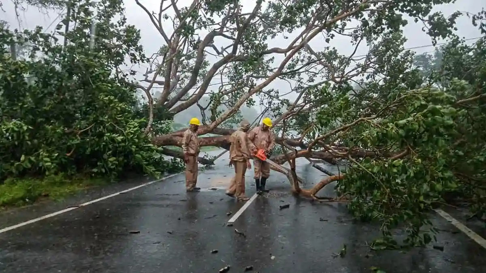
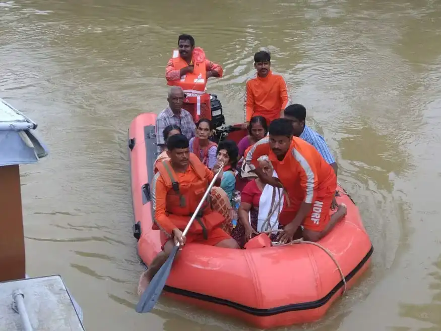
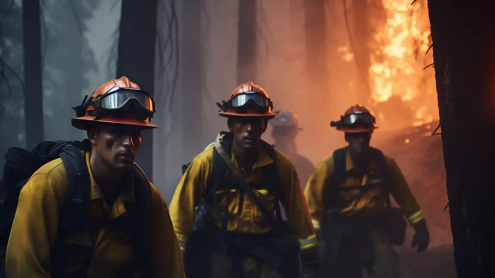
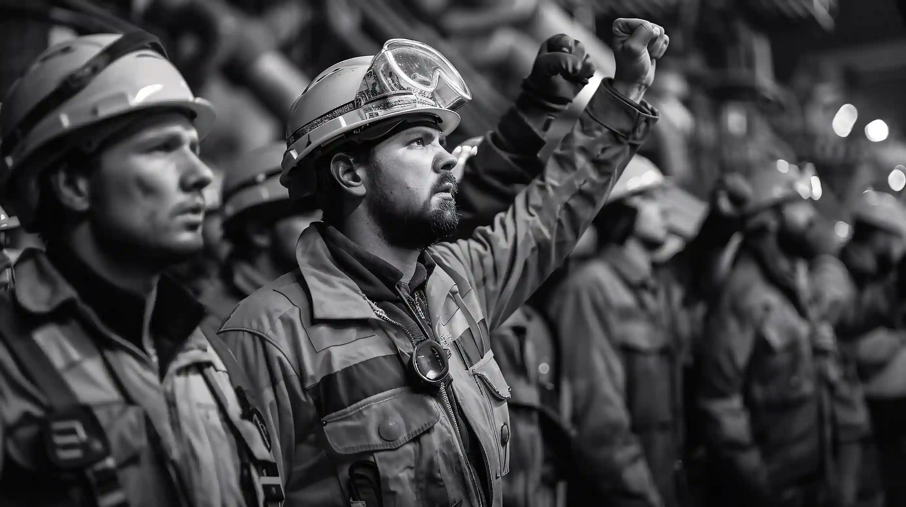
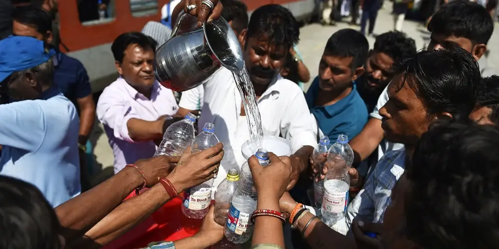
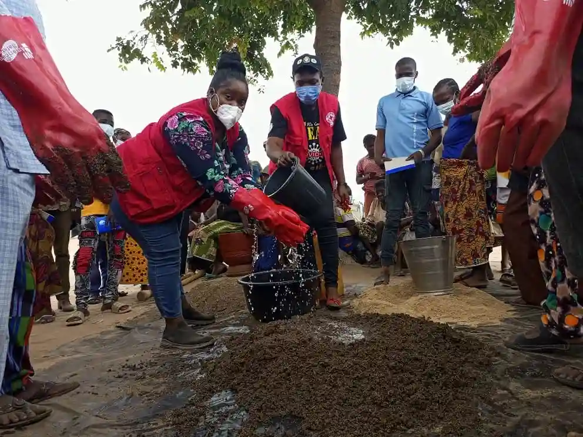
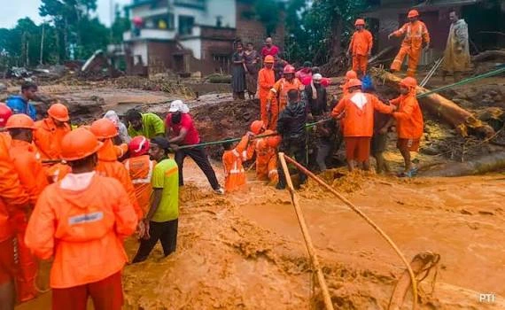
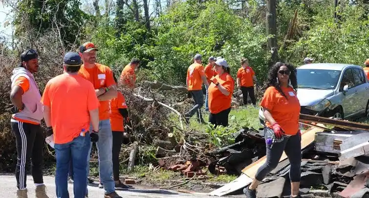
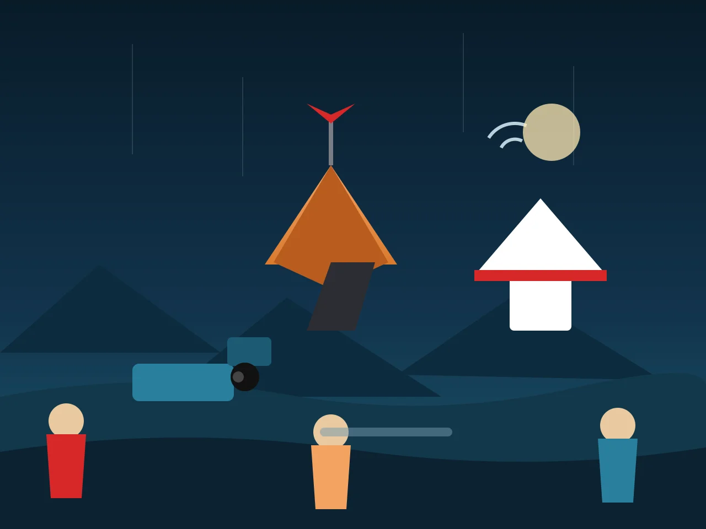

Wind Storms
Clearance, roofing, and emergency shelter for families after hurricanes and tornadoes.
Join Stackly's disaster response volunteer network and help communities prepare, respond, and recover when emergencies happen.
From rapid-onset storms to long-recovery droughts, our teams are trained and ready for every kind of emergency.

Clearance, roofing, and emergency shelter for families after hurricanes and tornadoes.

Sandbagging, water rescues, pumping, and relocation for rising-water emergencies.

Evacuation support, fire-line logistics, and re-entry assistance for affected zones.

Search, triage, structural safety checks, and rapid shelter over collapsed areas.

Cooling centres, hydration distribution, and check-ins on vulnerable residents.

Water deliveries, food aid coordination, and long-term resilience planning.

Debris clearance, geohazard marking, and community evacuation logistics.

Hail, lightning, and flash-flood response with rapid field-deployed crews.
A clear, trusted pipeline that turns a community alert into on-the-ground volunteers — fast.
Community members trigger an alert with location, type, and urgency.
Nearby trained volunteers and resources are matched to the incident.
Crews mobilise on the ground with gear, transport, and a clear plan.
Long-term support helps communities return stronger than before.

Every stat below is a neighbour we helped stand back up.
People like you who showed up when it mattered most.
"When the mains flooded, our crew of 40 neighbours rebuilt three streets in a weekend. That's what this is about."
"Every drill, every early call — it paid off the night we walked an entire hillside to safety."
Real-time situation reports from crews on the ground.
Crews are holding the west line; 12 evacuation routes remain open.
Structural teams cleared 94% of buildings; temporary shelter active.
Pumps still running; sandbag line held overnight against the surge.
Real accounts from the volunteers and communities we serve.
Share your story — join the network and tell it live.
Small steps today save families tomorrow. Start with the essentials.
Everything you need before you get started.
Absolutely. More than 60% of our volunteers join with zero background. We provide free certified training in first aid, search & rescue, logistics, and shelter support before you're ever deployed.
As little as one evening or weekend a month. Response roles are needed most during emergencies, but training, preparedness, and fundraising run year-round — you choose your availability.
Yes. Training is funded by donations and partner organisations so cost is never a barrier. You only pay for optional personal kit if you want your own.
We coordinate around the Central District and expand to affected communities nearby during crises. When you sign up we match you to the closest active chapter.
Your gift funds kits, fuel, and training — getting help to families in the first critical hour.